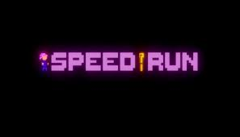

Un Speedrun es una competencia entre jugadores cuyo objetivo principal es generalmente acabar un videojuego u otro objetivo secundario de este en el menor tiempo posible. En internet existen sitios web dedicados a estas competiciones, con registros de los mejores tiempos. Los speedrunners suelen utilizar trucos o errores del juego, también conocidos como glitches, para ahorrar tiempo.
Categorías
- Según ejecución
Existen diversos tipos de speedrun según el flujo de la partida:
- Time Attack (TA): Se enfoca en completar el juego, ignorando los tiempos de pantallas de carga o reinicios de consola. Muchos juegos poseen contadores de tiempo de juego, lo cual permite hacer que el Time Attack sea equitativo para todos.
- Real Time Attack (RTA): A diferencia de Time Attack, Real Time Attack toma en cuenta pantallas de carga y reinicios de consola, requiriendo que el juego que esté siendo jugado se encuentre en óptimas condiciones para reducir esos tiempos.
- Segmentada (o spliced): Se juegan todos los niveles de manera independiente, a menudo más de una vez, se obtienen los menores tiempos en cada nivel y al final se calcula el tiempo total, teniendo en cuenta los mejores tiempos de cada nivel.
- Tool-assisted Speedrun/Superplay (TAS): Se utilizan emuladores o scripts. Estos son mecanismos automatizados que permiten ejecutar acciones en el juego sobre un determinado lapso de tiempo que difícilmente se podrían ejecutar manualmente, ya que pueden hacerse más rápido que el tiempo de reacción promedio del humano. Esto permite hacer speedruns "perfectos".
- Según finalización
Los speedruns se clasifican en varias categorías según en qué medida se completa un juego:
- Any%: o finalización más rápida, se refiere a completar el juego lo más rápido posible y, a menudo, implica romper la secuencia del juego.
- 100%: o finalización completa, requiere que el jugador complete el juego al máximo. Esto a menudo incluye recopilar todos los objetos clave o mejoras, encontrar a todos los personajes secretos o cualquier otra cosa que pueda considerarse importante. Los requisitos específicos para un 100% son diferentes según el juego. Algunos juegos, como Super Metroid, tienen un contador de porcentajes y, por lo tanto, tienen una definición fácil para el 100%. Otros no, y en su lugar la comunidad del juego decide cuál debería ser la definición del 100%. Any% y 100% son las categorías más comunes para speedrunning.
- Low%: o una finalización minimalista requiere que el jugador complete el juego obteniendo la menor cantidad de objetos clave o mejoras posibles. Si la forma más rápida de completar el juego ya implica que el jugador recoja la menor cantidad de objetos clave o mejoras, es posible que no exista una categoría de porcentaje bajo para los speedruns de ese juego. Al igual que con el 100%, los speedrun Low% tienen requisitos que varían entre juegos.
Enlace de referencia para guiarte: pagina oficial de speedrun